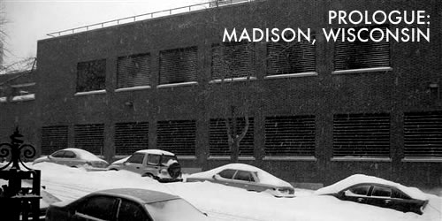
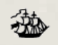

Tonight I made a sandwich made of peanut butter, wild blueberry preserves, and one half of an overripe banana. I cut the sandwich into two equal portions, with a butter knife that had a slightly loose handle.
The sandwich was good, but I couldn't stop thinking about the loose handle on the knife. Is there any way to repair broken cutlery? Are there even instructions anywhere in the world on the care and repair of butter knives? Are there cutlery repairmen? If so, are they unhappy with their vocation?
I have decided to write a novel. This novel will be called Dark Penguin. It will be a love story.

All stories are love stories, in one way or another. Someone loves someone else, or someone hates someone else, and isn't hate just the flipside of love? Or is that just another banality that sounds good on paper? Banality is a big part of my life just lately. Maybe, if I really want to be honest, I should title this story The Banality of Love. Too much or too little of anything can become boring. That's kind of a banal sentiment, too. Oh well.
It's been nearly twenty years since the last time I saw Sarah. Our last encounter was the very model of banality. It took place during a late afternoon at a family restaurant in Anaheim, the two of us sitting at opposite ends of a circular booth. We were in the middle of our first year at our respective colleges, home for Christmas vacation. She was telling me something, something extremely personal and painful to her, and I was listening but not quite listening, just as I was looking at her but not quite seeing her.
I'm not going to tell you what she told me. Some secrets need to be kept. I think Sarah would appreciate my discretion. Discretion is an increasingly rare skill in this day and age, and one of the things that makes me a good friend, or so I'd like to believe.
I wasn't a very good friend to Sarah, though, not that day at least. I wasn't really listening to what she was telling me, because quite a lot of it had to do with someone I didn't care for very much. That someone figures prominently later in this story, so I don't feel too bad about not telling you very much about him now.
So, Sarah was talking to me, and now that I think about it, she was crying a little, too, because of something this other person had said to her during a sensitive moment, and something she had wanted to say in return but couldn't. Sarah was one of those girls who is most beautiful when she's sad. I feel sorry for girls like that, because I imagine that, on some subconscious level, other people perceive this, and -- without meaning to, usually -- try to make them sad, always, so that they will always be beautiful.
Sarah was very beautiful as she sat across the ping pong table from me and crying a little, because she was very, very sad. If you had been in the next booth and peeked over my shoulder at her, you'd have hardly believed that this weepy little thing would end up mowing down mercenaries with an automatic rifle on the southern coast of Africa. But that's exactly what happened.
Eventually I'll probably tell you what it was that she told me that afternoon, at the family restaurant in Anaheim. You can be sure, though, that I'll tell you about Africa and the mercenaries, because that's exciting stuff -- not at all banal, and yet, still very much about love.
One thing I will tell you right now is that one reason why Sarah was sad, not just at the moment but at the core of her very being, was that she was poorly treated as a child. Once, when she was thirteen, her mother found out that she had been at a party, with boys, and she burned Sarah's upper arm with a hot iron. Sarah told me about that, during our junior year of high school, not long after we became friends. As if I wouldn't believe her or something, she rolled up the sleeve of her t-shirt and showed me the scar. Seeing it made me feel ill, and angry, although not as angry as it makes me now to remember.
Her face when she told me about the horrible thing her mother had done to her wasn't sad, like one would think, but completely calm, almost robotic, like she was reciting a poem she had memorized for English class. She didn't look beautiful at all, then; just placid and vacant. I was angry, though. I said, "I'd like to take an iron to that witch's face." Sarah didn't smile or frown at that, but just looked at me with her unwavering blue eyes.
After she told me, I felt like kissing her, and I would have, if kissing between a boy and a girl could mean nothing more than "I'm so sorry that you were alone when that horrible thing happened to you, and although I couldn't be with you then, I am here now and you are not alone." Kissing can sometimes mean that, but it's a tricky thing, especially when you're both teenagers. So.
Anyway, I wasn't listening very closely while Sarah was talking to me, and if she were anyone other than Sarah, she would have gotten cross and said something like, Did you hear what I just said? or Are you even listening to me? or Hellooo, is anyone in there? But Sarah knew me all too well by that time, so she just looked at me looking at her and not quite listening, and smiled in that small quiet way that let me know that she knew, and it was okay. And I looked past her shoulder at the window, where they had hung a banner that read BREAKFAST ALL DAY, except backwards because the banner was meant for people outside the restaurant, not inside where we presumably already knew about breakfast.
Forgiveness is a terrible thing. Someday I will die of forgiveness.
Afterwards, as we left the restaurant, we paused for a moment in the parking lot. The sun was disappearing behind the rows of tract houses. A truck with the words AJAX HAULING printed on its side trundled by on the street behind Sarah. I said something ordinary to her -- Well, I'll call you later or something like that -- and Sarah hugged me, and the hug turned into a kind of desperate clinging embrace. I hugged her back and patted her on her shoulder. I didn't know what else to do. She just held on to me and I sort of made this noise that I hoped would sound comforting. We stood like that for what seemed like several minutes, although it probably wasn't more than thirty seconds. I could feel her against me but I couldn't feel myself at all. If I existed at all in that moment, it was only as an idea, a notion of a friend. Then Sarah let go of me and smiled, and neither of us said anything, and she got into her car and I got into mine, and it was nearly twenty years before I saw her again.
For Skattie.